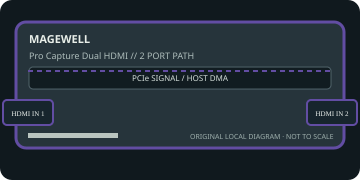

[ INDIVIDUAL COMPONENT // EXPANSION CARDS ]
Magewell Pro Capture Dual HDMI
Dual-input PCIe capture board for two independent HDMI sources. This static reference distinguishes documented card I/O from host software, codecs, and external signal paths.

IDENTIFICATION: Match the exact SKU, model marking, part number, board revision, bracket and connector layout to manufacturer documentation. Similar family names do not imply interchangeable ports, firmware or support.
Capture, playback and compatibility specifications
| Exact model / SKU | Pro Capture Dual HDMI — verify the marking and revision on the physical card. |
|---|---|
| PCI/PCIe bus and lanes | PCI Express Gen 2 x4. Use a host slot with four electrically available lanes and sufficient aggregate transfer bandwidth. |
| Digital video inputs | Two independent HDMI inputs with embedded audio; HDMI revisions, timing envelope and per-channel maxima must be checked against the manufacturer’s model-specific specification. |
| Analog ports | No analog video input or output. The card accepts HDMI digital signals only. |
| Input formats | Digital HDMI capture up to the published per-channel raster (including supported 2048×2160 modes); input timing, refresh, color space and dual-channel concurrency are driver/model dependent. |
| Output formats and connectors | No physical video output; captures frames to the host. Output file format is selected by the capture application rather than a hardware encoder on the card. |
| Encoding and driver model | On-card 10-bit processing and format conversion are provided, but no compressed-file encoder is specified. Host software encodes the captured stream if needed. |
| Operating-system compatibility | Magewell driver/SDK supports Windows, Linux and macOS subject to the product/release matrix. Check the Pro Capture downloads page for current OS builds, API and firmware tools. |
| Software | Magewell Capture Express, Magewell SDK/API and compatible DirectShow, V4L2, AVFoundation or third-party capture applications as supported by release. |
| Power and cooling | PCIe slot-powered configuration; the public product summary does not give one maximum wattage for every revision. Check the model datasheet, host-slot budget and thermal conditions for two-channel continuous capture. |
| Firmware caveat | Use Magewell’s matching driver/firmware package and follow its update procedure; do not interrupt an update. Older revisions may not gain support for every feature of a new driver. |
Integration notes and limitations
- The host must sustain both input streams and destination writes. HDCP-protected sources, unsupported refresh rates, color formats or hot-plug behavior can prevent capture; verify the exact source mode first.
- Verify physical slot fit, PCIe lane wiring, BIOS/UEFI enumeration, host bandwidth and driver support together; a longer slot does not guarantee the electrical width the card needs.
- Record the board revision, firmware/driver versions, OS build, application, signal standard, source timing and tested pixel format as part of commissioning.
- Distinguish a video transport/pixel format from a compressed file codec. Unless the manufacturer explicitly states hardware encoding, codec creation and recording are host-application tasks.
Manufacturer sources and support
- Magewell — Pro Capture Dual HDMI product specificationsManufacturer source; consult the exact model/revision and software-release notes before installation.
- Magewell — Pro Capture drivers, manuals and download centerManufacturer source; consult the exact model/revision and software-release notes before installation.
Product revisions, driver support and application integrations change over time; manufacturer documentation for the exact card takes precedence over generic family-level guidance.